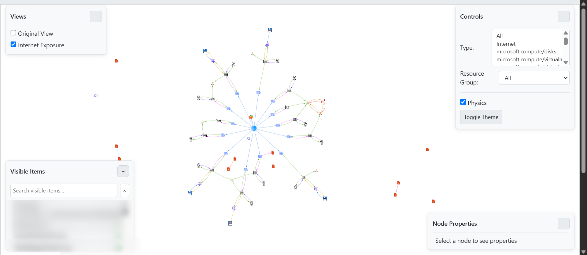

Your Azure infrastructure isn’t just a list of names in a spreadsheet; it’s a living, breathing network of interconnected services. So why are you still trying to understand it by scrolling through a flat CSV file? The complexity of modern cloud environments means that seeing the “big picture” how resources relate to each other and to the outside world is more critical than ever, yet often feels impossible.
In this post, we’ll introduce a powerful open-source tool, the Cloud Visualizer (CAV), that transforms that boring data export into a rich, interactive graph. We’ll show you exactly how to go from a raw CSV file to a fully explorable map of your cloud, and how to uncover security insights you might have otherwise missed.
The Problem: Cloud Blindness by Spreadsheet
If you’ve ever used the Azure Portal’s “Export to CSV” feature or run a query in the Azure Resource Graph Explorer, you know the result: a massive table with thousands of rows. While this data is comprehensive, it’s terrible for understanding relationships. Which Network Security Group (NSG) applies to which Virtual Machine? Is that Storage Account publicly accessible? Answering these questions requires painstaking manual cross-referencing and can feel like searching for a needle in a digital haystack.
This lack of visibility isn’t just inefficient; it’s a security risk. A misconfigured rule buried deep in a resource’s JSON properties can go unnoticed, leaving your infrastructure exposed.
Introducing the Cloud Visualizer (CAV)
The Cloud Visualizer (CAV) was built to solve this exact problem. It’s a simple yet powerful tool that ingests your resource CSV and generates a single, self-contained HTML file. When you open it, you’re greeted with an interactive, explorable graph of your entire Azure environment.
Key features include:
-
An Interactive Map: Drag, zoom, and explore your resources as nodes and their inferred relationships as connecting lines.
-
Intelligent Filtering: Instantly hide or show resources based on their Type or Resource Group.
-
Security-Focused Views: Switch from a clean asset inventory to an “Internet Exposure” view that immediately highlights publicly accessible resources.
-
Instant Property Inspection: Click any resource to see all its properties, beautifully formatted for readability.
How to Get Started in 3 Simple Steps
Getting your own visualization is incredibly straightforward and takes only a few minutes.
Step 1: Export Your Data from Azure
The CAV uses the output from the Azure Resource Graph Explorer, a powerful tool for querying your infrastructure.
-
Log in to the Azure Portal and search for
Resource Graph Explorer. -
Paste the following simple Kusto Query Language (KQL) query into the window. Replace the placeholder with your actual subscription ID.
Code snippet
resources | where subscriptionId == "<You Subscription ID Here>" -
After the query runs, click the “Download as CSV” button. For more detailed instructions, you can consult the official Microsoft documentation.
Step 2: Run the Processing Script
With your data file in hand, you just need to run the CAV’s Python backend. This script does all the heavy lifting: parsing the data, building the graph using the incredible NetworkX library, and performing the security analysis.
-
Make sure you have the required Python packages installed:
pip install pandas networkx matplotlib pyvis -
Place your downloaded CSV into the project’s data folder.
-
Run the script:
python visualize_azure_graph.py
The script will generate a single file: azure_graph.html.
Step 3: Explore Your Cloud!
Open azure_graph.html in your web browser. That’s it! You can now explore your infrastructure visually. Try using the “Controls” panel to filter down to just your Virtual Machines and their associated Network Interfaces, or click on a node to inspect its raw properties in the “Properties” panel on the right.
pen azure_graph.html in your web browser. That’s it! You can now explore your infrastructure visually. Try using the “Controls” panel to filter down to just your Virtual Machines and their associated Network Interfaces, or click on a node to inspect its raw properties in the “Properties” panel on the right.

Beyond a Simple Map: Uncovering Security Insights
The most powerful feature of the CAV is the “Internet Exposure View.” When you enable this view, a special “Internet” node appears. The tool automatically draws connections from this node to any resource it determines is publicly accessible.
For example, it scans:
-
Network Security Groups: If an inbound rule allows traffic from
*,Internet, or0.0.0.0/0, it flags the NSG as internet-exposed. -
Storage Accounts: If the default network access rule is
Allow, it also flags the account as internet-exposed.
This provides an immediate, at-a-glance understanding of your potential attack surface, transforming the visualization from a simple inventory tool into a proactive security asset. The graph is generated on the front end using the excellent Pyvis library, which makes the dynamic interaction possible.
Conclusion: What Will You Discover in Your Cloud?
Moving away from flat files and spreadsheets to a visual, interactive model of your cloud is a transformative step. It allows you to build a better mental map of your infrastructure, troubleshoot connectivity issues more effectively, and, most importantly, identify potential security risks before they become a problem. The Cloud Visualizer provides a free and open-source path to achieving that clarity.
By visualizing your own infrastructure, what hidden connections or potential security gaps do you think you’ll find first?